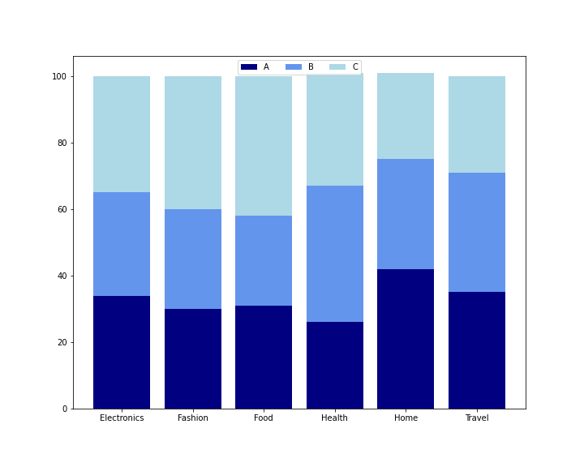

Predict Supermarket Sales using Linear Regression: Quantity Strong Predictor
0
Forecasting sales can inform the amount of influence various aspects of a business have on
performance. This knowledge can be used to facilitate data-driven optimizations within business
tactics, such as demonstrated in the following analysis of Q1 '19 transactional data from
3 supermarkets in Mayanmar.
A linear regression analysis was conducted to determine the influence:
branch, membership status, day of the week and quantity sold had on the sales
in the supermarket chain. The results of the analysis can be found in the following workbook:
Analysis Workbook
The model in the workbook describes about 80% of the sales variance, with the quantity of products sold
being the most influencial factor in the analysis.

Branch Share across Product Offering
The 3 supermarket branches are in 3 distinct cities: Yangon, Mandalay and Naypyitaw. Irrespective of
these differences, the 3 branches offer the same 6 products as shown in the image.
The differences in product share are minor, but worth mentioning with branch B selling about 40% Health products.
Overall, it seems like customers are equally likely to buy a product from any of the 3 branch.
While the branch and product type may not have a strong change in sales,
each additional product sold results in $57 of additional sales above the sales of branch C on the weekend, the baseline.
A potential recommendation is the supermarket chain should prioritize
the quantity of products sold as opposed to the type of product.
Moving forward, it may be beneficial to add more transactional data to the analysis, to understand information from additional quarters
as well as additional branches. Currently, the analysis is conducted on branches located in cities with
various populations, which may have different foot traffic. It would be interesting to include a customer identification
on the transactions, so the sales could be predicted at a customer level.